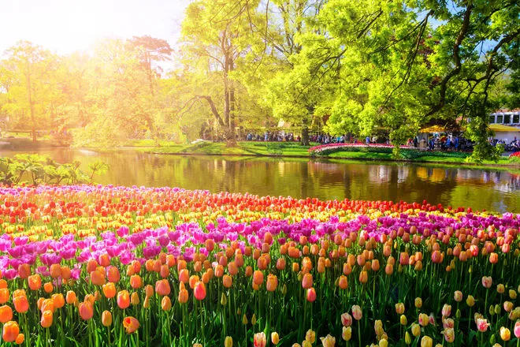
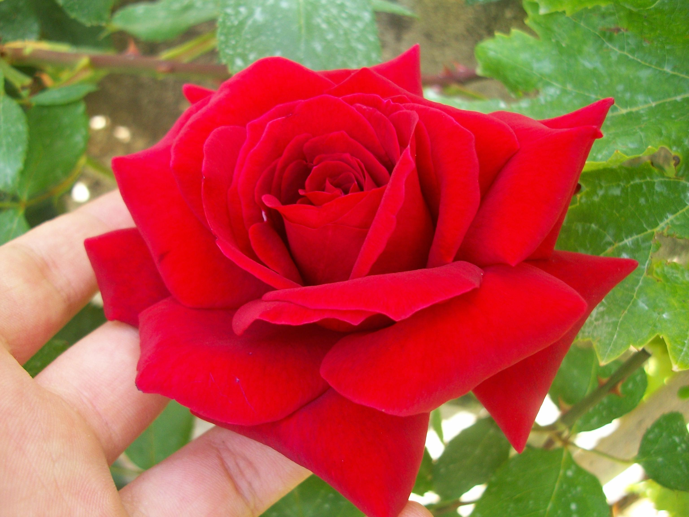

About This Blog
Hello! I'm a passionate flower lover, and this blog is dedicated to all things flower. Here, I share information about different types of flowers, gardening tips, and the beauty of nature.
A beautiful field of flowers.
Popular Flowers
Roses
Roses are one of the most popular flowers in the world, known for their beauty and fragnance. They come in a variety of colors, each with its own meaning.
A stunning red rose.
Learn more about roses on The Old Farmer's Almanac.
Tulips
Tulips are vibrant spring flowers that come in a wide range of colors. They are symbol of perfect love and are often associated with the Netherlands.
A colorful fields of tulips.
Learn more about tulips on Gardening Know How.
Gardening Tips
How to Plant Flowers
Planting flowers requires the right soil, sunlight, and care. Follow these tips to create a thriving flowers garden.
Read more on Better Home & Gardens.
Watering Your Garden
Proper watering is essential for healthy flowers. Learn how to water your garden effectively without overwatering.
Read more on Gardening Know How.
Flower Videos
Watch this relaxing video of flowers blooming in a garden.